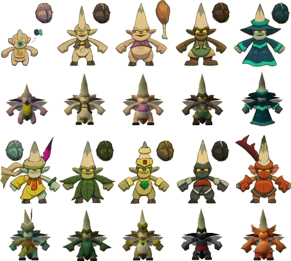

")
RuneScape Development Teams - Impetuous Impulses

RuneScape Development Teams - Impetuous Impulses
Welcome to the first of the Development Diaries. In this series of articles, we'll take you behind the scenes at Jagex HQ to see just how we go about making content for RuneScape, as well as the difficulties and triumphs we deal with along the way. This first, extra-long diary will show you the complete development of a single piece of content - Impetuous Impulses - from concept to release. After this, new diaries will be released on a regular basis about how our development teams have handled specific projects.
Impetuous Impulses
The concept of this Hunter-based task is to use a butterfly net to capture a range of implings (tiny flying imps). Being related to imps, these implings are prone to taking items that don't belong to them, so capturing one will land you some lovely loot; anything from a baby impling dropping a bowstring up to a ninja impling dropping some black mystic boots, and then there are dragon implings, but we'll get to those later... These implings can mostly be found on their home plane of Puro-Puro, which can be visited by finding and entering crop circles that randomly appear in the wheat fields of RuneScape. Implings can also be found wandering all around the world, so be sure to have your butterfly nets handy at all times!

Concept art of various crop circle designs that didn't make it into the game.
A brief brief
(Duration: 2.5 weeks)
"The initial brief was simply to 'make a hunter task'", says Mod Chihiro, developer of Impetuous Impulses. "I've had the seed of an idea for a butterfly-netting task since about May 2006, albeit as a weird Herblore update involving magically-mutated butterflies." In the early briefing meetings, Senior Creative Designer Mod Mark suggested to move the focus away from Herblore to more general item drops, as there are now plenty of ways to get hold of herbs. As imps are known for stealing, they seemed the perfect rationale upon which to base the content.
The brief was fleshed out from talking through ideas with the rest of the RuneScape Content team. Conversations with Mod Greg led to the use of crop circles and Zanaris, and the shifting maze concept from Mod Dylan. From these initial meetings, the important parts of the early design brief became that the implings could fly freely over obstacles and that the maze they're in could 'shift'. Mod Chihiro goes on to say, "Either of these things alone would be straightforward to do, but both together was far trickier than I thought. Nobody had done this with the RuneScape engine before." As such, it was important to first prototype the concept to see if it was even possible.
Post-prototype problems
(Duration: 1 week)

After developing a prototype, using placeholder graphics, it was sent to the Quality Assurance (QA) team for a focus test to make sure that the gameplay was solid and, above all, fun. With this step complete, it was now a case of turning the prototype into a proper piece of content, which meant involving the Graphics team. "When I took the prototype to Graphics...I realised I should have taken it to Graphics sooner (laughs)", Mod Chihiro jokes.
 Andrew
AndrewGame Development
The Graphics team discovered an issue with the way locations were displayed in the game, and the attempts to overcome it highlighted a limitation of the RuneScape engine. The problem was that we wanted hedges that could move, that implings could fly over and that players could push through. "There were some fairly large technical discussions at this point", says Mod Chihiro.
It became clear that the project couldn't work as planned...at least not with the current game engine, so Mod Chihiro brought the problem to Andrew, founder of RuneScape and Lead Developer, who saw it as a bug and got about fixing it. "I never imagined anyone would want to do that!", says Andrew. Mod Chihiro follows that with, "The engine is changing every month, in small ways, giving developers more flexibility."
Media frenzy
(Duration: 4.5 weeks)

With the engine issue now fixed, the project went into full-scale production. This meant the Graphics team could get on with actually designing the impling NPCs and the shifting maze of Puro-Puro. The brief was for ten kinds of impling (shown below) and some crop circle designs (shown above). Mod GG drew the concept art and says, "I started with the colours as the implings are very small creatures, and had to be recognisable from far away. The 'fashionable' implings (eclectic and magpie) were very near thematically, so to differentiate the eclectic impling it was given a stronger colour and extra features like the feather." The implings were then modelled and animated by Mod Damian.

Impling concept art to in-game model comparison. From top-left to bottom-right:
baby, young, gourmet, earth, essence, eclectic, nature, magpie, ninja and dragon implings.
The next piece of the puzzle was to get the Audio team with creating all of the music content for the task – music, sound effects and jingles. Mod Chihiro was very keen for audio to be an important part of the task; Audio's Mod Bond agrees, saying that "It's important to provide music that is dynamic and that responds to what players are doing in the game." The brief given in the audio spec meeting was a simple one (mischevious, lighthearted and 'spooky') allowing him a free reign.
Balance of power
(Duration: 6.5 weeks)

With the gameplay now set and the graphics and audio work finished, coding commenced to stitch it all together and then the project was sent over to the QA team to make sure everything worked as expected and to smooth out any bugs. However, there is more to QAing a piece of work than finding bugs; the content has to be fun, worthwhile and has to fit in well with existing content as well as standing out on its own merits. As such, the balancing of content is incredibly important.
PaulRuneScape Content
"The prime concerns were the item drops", says Mod Chihiro. "One of the things the content needed was for the rarest implings to have high-end drops, to give top-end players as much reason to play this task as the lower-levelled players." Adding high-end drops is quite tricky (to put it mildly) as we can't be too stingy with the drops that you all wouldn't bother with the task, but not so generous as to unbalance the rest of the game.
The items had to be desirable, to both fit in thematically and to catch everyone's interest, and also 'physically' small, such that the tiny implings could believably be carrying them. It was crucial that we got the balance right. Paul was brought in to help balance the item drops and says, "Looking for something for a high end reward, my thought turned fairly quickly to the dragon items. Adding items to the dragon set always increases their desirability and they were of the right sort of level for this feature. Mod Chihiro had suggested something small; thinking through items made of the other standard metals, you can't get much smaller than arrowtips." Once this had all been decided, Mod Adam of the QA team created the drop tables for each impling.
A shot in the dark (bow)
With dragon arrows being added to the game there needed to be a new bow to fire them from, as there wasn't one already in game capable of doing so. We could have enhanced an existing bow to fire dragon arrows, but it seemed like the perfect opportunity for us to implement a new bow, something we'd been thinking on for a long time. Mod Mark says, "We have an homogeneous approach to design, bouncing ideas off other developers, talking through briefs with each other. We have lots of thoughts at the back of our heads, but tend to wait for a good opportunity to release them, such as with the dark bows and dragon arrows."
However, it didn't fit that such small creatures would be stealing larger items, so "having implings carrying a huge bow was not in keeping with the flavour of the content...", Mod Chihiro continues, "...the dark bow has its own reasons for existing." Another member of the RuneScape Content team was set the task of adding such an item to complement the new dragon arrows - that other developer was Mod Ingrid.The brief for the dark bow was equally short: "Mod Mark asked for a high-end bow, and a dark beast drop", says Mod Ingrid. "The dark bow took a lot longer than it might seem", she continues, "what with all the layers of complexity within the combat code. Once the coding was done and the 'numbers' were right, I spent the same effort again on getting the feel of the bow right... The Audio team put the finishing touches to the bow - the icing on the cake."

Some concept art designs for the dark beast, dark bow and the dark bow's special attack.
Testing, testing
(Duration: 4.5 weeks)

With all the content coded together, it then moved to QA to make sure that it worked as intended and to have as many bugs as possible ironed out prior to release. With a game like RuneScape, it would be impossible to account for every single bug that players could find. "Upon release, the code is exposed to thousands of players, doing odd combinations of things that are unforeseeable", says Mod Chihiro.
The QA team don't just check for bugs in the code, however. They also make sure content is logical and consistent with itself, the rest of the game and the plot. They also check the graphics and audio work properly and fit in, and other tiny things most people wouldn't even consider. It's not an easy job... Mod Noldor remembers, "At an early stage in the project, when the rare implings were still a nightmare to find, another mod was running through a random area when, out of the blue, I just heard them yelp 'What the heck! Oooh, a ninja impling' and we promptly ran around trying to catch it."
Fast geschafft! (Nearly done!)
(Duration: 2 weeks)

With the coding done, the graphics and audio added, and the last few jobs passed through QA, the final stages of the development cycle are for the Web Content and Translation teams. At this stage, the Web Content team had to proofread the 4,000 words that were added to the game, which, considering RuneScape is a fantasy game, threw up some interesting challenges. Mod Osborne covers it succinctly with, "How do you edit the word 'Graaagh'?". The Game Guide also needed to be updated to reflect the new content, in this case a guide for the task, the new dragon items in Fletching and Ranged, and the dark bow and its special attack.
Finally, the content needs to be translated by the Translation team, who have their own unique language-based challenges. "The name of the task alone was hard to translate, as it is an alliteration and has the word 'imp' in both words of the title. This was impossible to adapt because the German word for imp, 'kobold', isn't part of another word.", says Mod Heiko. Impetuous Impulses was translated to 'Irrwitziger Irrgarten' (Manic Maze). Naming the implings was also a challenge: Mod Heiko continues, "We had to hold a meeting about this translation and decided on 'feebold', a funny and nice name."
In total, from the initial briefing at the beginning of December 2006 to it being ready for release, Impetuous Impulses took a little over five months to develop. Skills and large quests can have longer development times, of course, but everything is coordinated so that we can release updates regularly.
Release day
(28 weeks later)
Mod IngridRuneScape Content
"Release day is always adrenalin-filled – always fun (and frantic...and stressful); we get to go in game, hype it up a bit (laughs)...and see our content live, hundreds of people playing it, asking each other questions...asking me questions", says Mod Chihiro, "It's a nice feeling...especially if players like it – it's the buzz, the reward at the end of the hard work."
Mod Ingrid's view reflects this, but although she has worked on lots of content already, this will be her first piece released into the game, so adds that she's also "terrified about the release... We'll spend all day waiting for bug reports to come in and reading the forums. Everyone in RuneScape Content reads the forums religiously for feedback." She is confident, though, saying, "It should be a success, but you can never tell." Mod Chihiro agrees, "It can sometimes take a while to get it right."
Over to you
Mod Chihiro's hopes for the task are firstly for everyone to enjoy it, but he'd also really like for a community to build around it. "If one player spots a dragon impling, but doesn't have the Hunter level to catch it, they could contact their friend who does. Then they could follow the dragon impling until their friend arrives and catches it. If that happens just once, I'll be very happy!" Who knows, maybe you can even share in the loot!
Asked which of the implings he prefers, and why he chose to make them an impling type, Mod Chihiro plumps for, "Ninja and dragon, just 'cos they're cool... It's hard to see that they look cool, as they are so small, but they do look cool. If this were Mod Wilson's content, they'd have been pirate implings! Zombie ninja pirate implings! (laughs)...but I don't want to get into the whole pirate/ninja debate."
Meet the team!


More articles in
Development Diaries
|
|